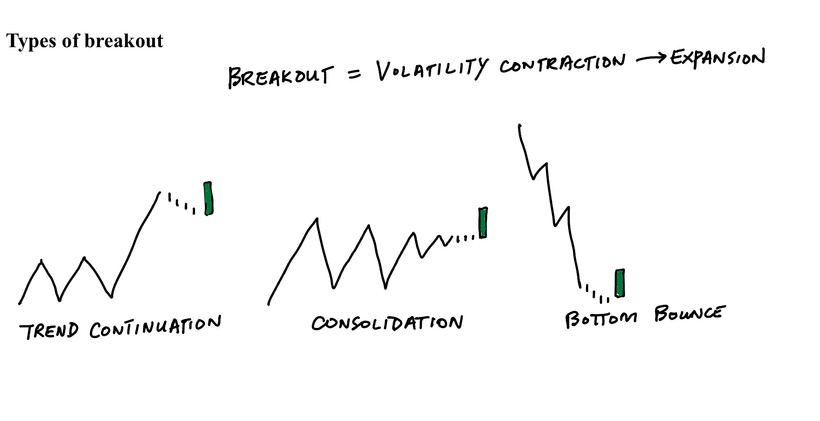
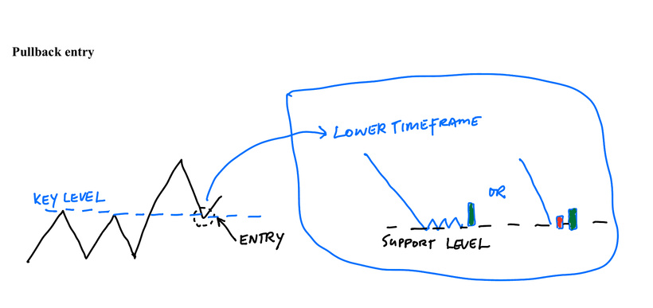
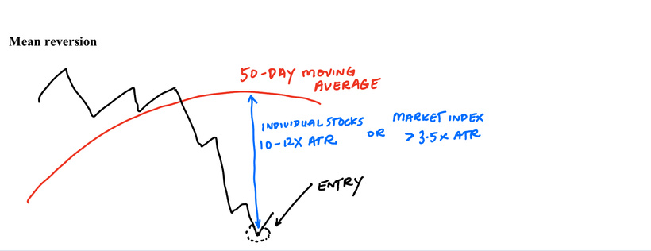
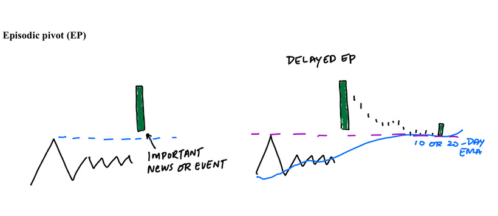

<h1>【教學】 Setup Schematic (For Newbies)</h1>






注解：

1）突破指 volatility / range 收縮，然後出現明顯擴張之時。突破交易 (trade breakout) ，理論上一旦發現突破，若未走遠之時盡快進場。 </br>

2）Pullback trade 重點要注意拉回之時，price action、動能是否有秩序 (幅度低、低成交)。若下跌屬高動能，避免 trade pullback。</br>

3）Mean reversion 進場點可留意 lower timeframe 下跌動能衰減，或強勁的 counter action (反彈)，大市指數可進一步參考環境證供 e.g. 市寬。</br>

4) EP 的重大事件多數為業績。詳細可打 "episodic pivot" 搜尋舊 post 相關教學。 Delayed EP 是指 EP 發生後，股價整固 (多數 7-10日之間會回到 10日或 20日線) 後視乎有否以 pullback trade 或 breakout trade 的 setup 進場。</br>

5) 所有 setup 都建議先預設離場點。Initial stop 視乎自身進取程度，一般做法是 set 在 支持位下、swing low 下、或者進取時間為 day low 下 or lower timeframe range 下等等，加多少額外緩衝視乎當時市況波幅及自身風險胃納而定。</br>

6）做任何 setup 都要注意 situation awareness (i.e. 大市狀況)。舉例，在市寬變差，或者大市已升很多 overextended 、或開始進入調整期時，避免 breakout trades。在大市動力強勁時就不考慮 mean reversion、bottom bounce trades 等等。</br>